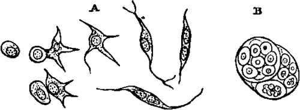

8. The Nucleated Corpuscles
Description
This section is from the book "Animal Physiology: The Structure And Functions Of The Human Body", by John Cleland. Also available from Amazon: Animal Physiology, the Structure and Functions of the Human Body.
8. The Nucleated Corpuscles
The Nucleated Corpuscles found in the textures of the higher animals present many varieties of appearance, but in their young and active condition they have this much resemblance to amoeba, that they present a mass of protoplasm with one or more nuclei, which may contain nucleoli. Some are surrounded with a membranous envelope, others have none, and with regard to a great number of them it is extremely difficult to say whether they have a membrane round them or not. The membrane, when present, is called a cell-wall, and the structure of which it is the limit is a nucleated cell; and in consequence of the circumstance that the mass of protoplasm was the last part of the corpuscle to have due attention attracted to it, and that the outline of the corpuscle was often mistaken for a membrane, even when no membrane existed, the importance of the cell-wall was formerly overestimated, and the word cell is even yet often used to indicate structures without a cell-wall, which are better designated as corpuscles. The cell-wall is probably in all instances a deposit round a pre-existing corpuscle.
At an early period of embryonic existence, the body may be said to consist entirely of nucleated corpuscles; and even after birth, the younger the animal the more abundant are these elements in the textures, and the more easily exhibited under the microscope. They are found in numbers wherever there is much growth; and in rapidly increasing tumours they exist in greatest plenty. They are also the germs from which the more complex elements of texture take origin. Thus nerves and voluntary muscular fibres originate by metamorphosis of nucleated corpuscles, which, in becoming more highly developed, lose the reproductive power, while they gain, in the one case, nervous activity, and in the other greatly increased contractility. Both of these tissues in early development present long bands of albuminoid substance, with a row of nuclei in each.
Fig. 3. Multiplication of Nucleated Corpuscles. A, Corpuscles from connective tissue of a foetal lamb, some of them dividing. B, Endogenous multiplication within a brood cell from a tumour.
Nucleated corpuscles multiply by division, which is termed fissiparous when the parts into which they divide are of similar magnitude, gemmiparous when buds are separated from a parent mass, as occurs frequently in vegetables. When a corpuscle divides within a cell-wall, which remains unruptured, the process of multiplication is called endogenous. The nucleus seems to play an important part in the multiplication of corpuscles, being, at least in many instances, the first part to divide.
At present the weight of evidence appears to be in favour of every corpuscle being derived from a parent. Certain physiologists hold a contrary opinion; but there is no well determined instance of these structures originating otherwise within the body.
The varieties of nucleated corpuscles found in different situations will come under notice in the description of the individual textures.
Continue to: